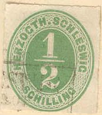
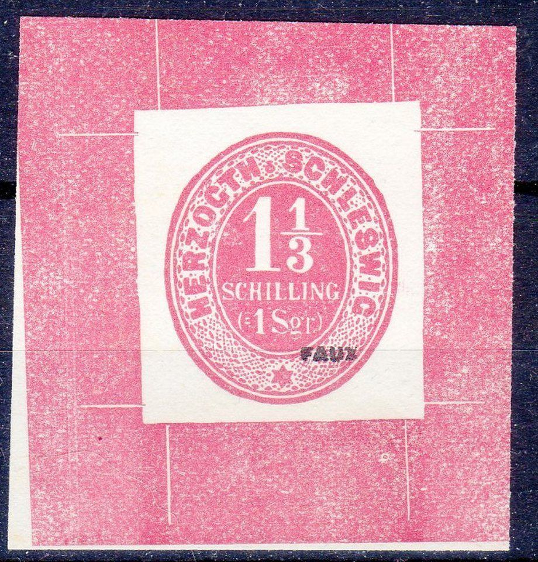
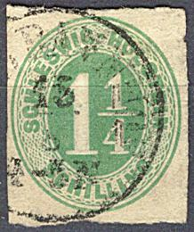
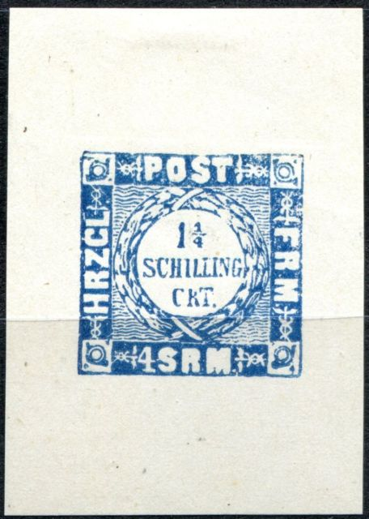

Return To Catalogue - Schleswig Holstein 1850 issue - Schleswig Holstein 1920 issue and miscellaneous - Other German States - Germany
Note: on my website many of the
pictures can not be seen! They are of course present in the cd's;
contact me if you want to purchase them.
In the period from 1 September 1851 to the end of March 1864, the stamps of Denmark were used in Schleswig-Holstein.

1/2 s green 1 1/4 s green 1 1/4 s lilac 1 1/3 s red 2 s blue 4 s red 4 s brown
Value of the stamps |
|||
vc = very common c = common * = not so common ** = uncommon |
*** = very uncommon R = rare RR = very rare RRR = extremely rare |
||
| Value | Unused | Used | Remarks |
| 1/2 s | *** | *** | |
| 1 1/4 s green | *** | *** | |
| 1 1/4 s lilac | *** | ** | |
| 1 1/3 s red | *** | *** | |
| 2 s | *** | *** | |
| 4 s red | *** | R | |
| 4 s brown | *** | *** | |
Cut from an envelope?

Fournier forgery; 'Proof' of the 1 1/3 Sch value.
Highly suspicious item with "AHRENSBOCK 19/9 66 9 10
V", which is known to have been used by the stamp forger
Fournier.

1/2 s red 1 1/4 s green 1 1/3 s lilac 2 s blue 4 s brown
Value of the stamps |
|||
vc = very common c = common * = not so common ** = uncommon |
*** = very uncommon R = rare RR = very rare RRR = extremely rare |
||
| Value | Unused | Used | Remarks |
| 1/2 s | *** | *** | |
| 1 1/4 s | *** | ** | |
| 1 1/3 s | *** | R | |
| 2 s | *** | R | |
| 4 s | *** | RR | |
Fournier forgery: 'Proof' of the 4 Sch value.
Forgery, possible some kind of cut from a postcard?
White text on coloured background
1/2 s green 1 1/4 s lilac 2 s blue
Value of the stamps |
|||
vc = very common c = common * = not so common ** = uncommon |
*** = very uncommon R = rare RR = very rare RRR = extremely rare |
||
| Value | Unused | Used | Remarks |
| 1/2 s | R | R | |
| 1 1/4 s | R | *** | Reprint: RR |
| 2 s | *** | *** | |
Coloured text on white background
1 1/4 s lilac 1 1/3 s (=1 sgr) red 2 s blue 4 s (=3 sgr) brown
Value of the stamps |
|||
vc = very common c = common * = not so common ** = uncommon |
*** = very uncommon R = rare RR = very rare RRR = extremely rare |
||
| Value | Unused | Used | Remarks |
| 1 1/4 s | *** | *** | |
| 1 1/3 s | *** | *** | |
| 2 s | R | R | |
| 4 s | *** | *** | |
A private reprint of the 1 1/4 s with white letters was made by Albin Rosenkranz (only 1000 reprints were printed by him). There are some small dots above the right star in this reprint. The "G" of "SCHILLING" is closed. The large "1" has a lot of shading lines (which do not appear in the original stamps). Non-existant essays were also made in the colour black and also in the color blue.
These stamps have been forged, examples of some Fournier forgeries:
'Proof' of Fournier
The first two Fournier forgeries above are cancelled with a
four ring cancel with '191' in the center. The last one has the
cancel "AHRENSBOCK 19/9 66 9 10 V". Other cancels that
were used by Fournier are (see image below):
"HUSUM 19/6 12-1 N"
"WESSELBUREN 24 11 8-10 N"
"BRAMSTEDE 27 6 1865"
"FLENSBURG 10/8 67 6-7 N"
"ALTONA 27/.. 66 2-..."
"SCHLESWIG 1 4 66 ...."
"ROTHENKRU.. IN SCHLESWIG 14 11 65 * 4-5 N" (in a
rectangle)
"ALTONA" in a straight line
"L.P. No 1" in a double outlined rectangle.
"L" in three concentric circles
5 parallel lines
"ELMHORN 26 5 67" in a single circle (no picture is
availalbe in the Ragatz version of the Fournier Album)
Forged Fournier cancels taken from a 'Fournier Album of
Philatelic Forgeries', reduced sizes
Forged 'L' in three concentric rings, possibly a Lubeck cancel
used on Schleswig forgeries by Fournier?
Probably all the above stamps were forged by Fournier ('Schleswig Holstein', 'Herzogth. Schleswig' and 'Herzogth. Holstein', except the ones with white text). Examples can also be found in 'The Fournier Album of Philatelic Forgeries'. However, no mention of these forgeries is made in Fournier's 1914 pricelist.
Another forgery(?) of the 4 Sch stamp with the lettering
different from the genuine stamps.
1 1/4 s blue ('1 1/4' large)
1 1/4 s blue (letters with 'H.R.Z.G.L.')
1 1/4 s blue (two types, letters with 'HRZGL')
Value of the stamps |
|||
vc = very common c = common * = not so common ** = uncommon |
*** = very uncommon R = rare RR = very rare RRR = extremely rare |
||
| Value | Unused | Used | Remarks |
| 1 1/4 s | *** | *** | '1 1/4' large; 'SLM' means 'Schilling Lauenburgischer Munze' |
| 1 1/4 s | R | *** | 'H.R.Z.G.L.', 'SRM' means 'Skilling Rigs Mint'. |
| 1 1/4 s | R | *** | 'HRZGL' |
There should be an underprint on these stamps leaving a white 'P' in the center of the stamp. The 1 1/4 s with 'HRZGL' inscription was reprinted with help of Albin Rosenkranz (1910?); the reprint has the 'S' of 'POST' joining the upper white space. The 'R' of 'CRT' has a broken top. It is described in Ohrt's reprint book. Non-existant reprints of 'Essays' in black and also in red were printed at the same time.

Rozenkranz reprints in blue and red and a Rozenkranz 'proof'.
Forgery with dots on the "I"s in "SCHILLING".
Some forgeries in the wrong colors: lilac (2 different types!)
and black.
Other deceptive forgery, in my view the background pattern is
different.
Typical cancel, 3 rings with number inside:
(Reduced view)
(Forged red '131' cancel on a genuine stamp)
Schleswig Holstein 1920 issue and miscellaneous
{kind=link}
{kind=link}
{kind=link}
{kind=link}